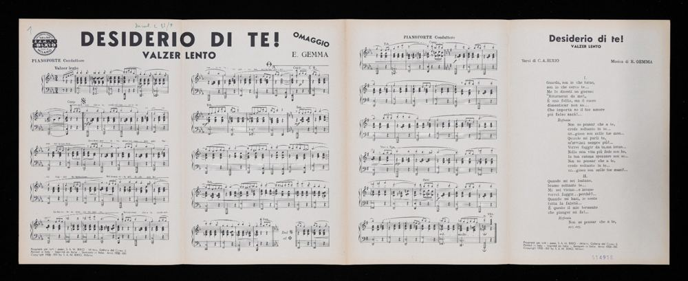
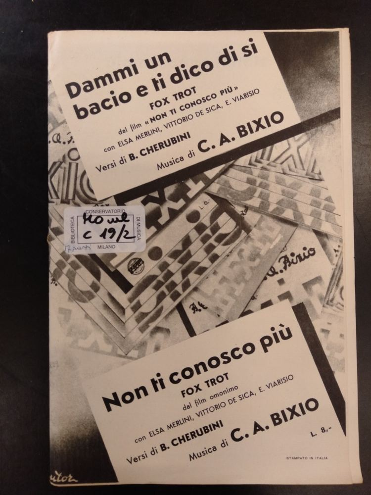
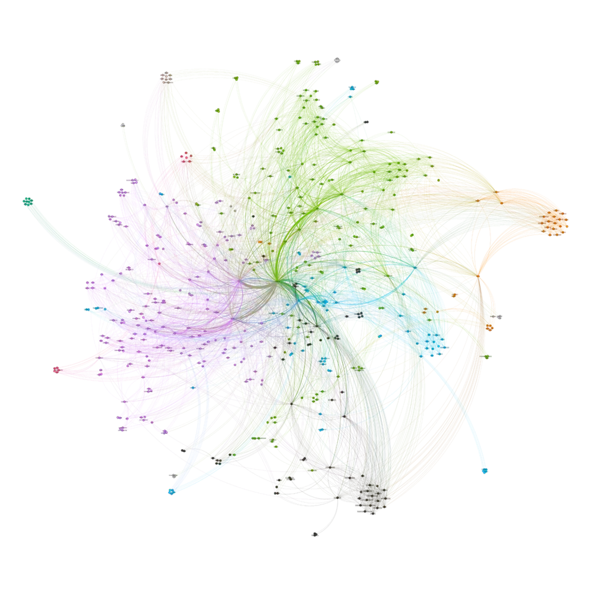
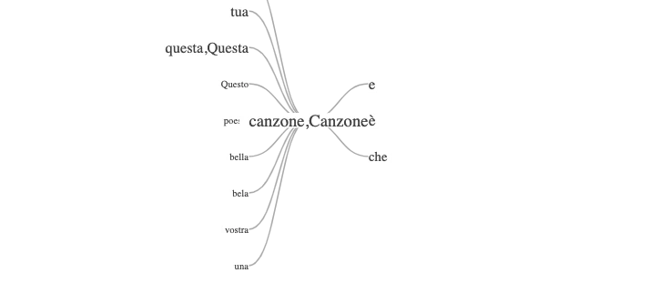
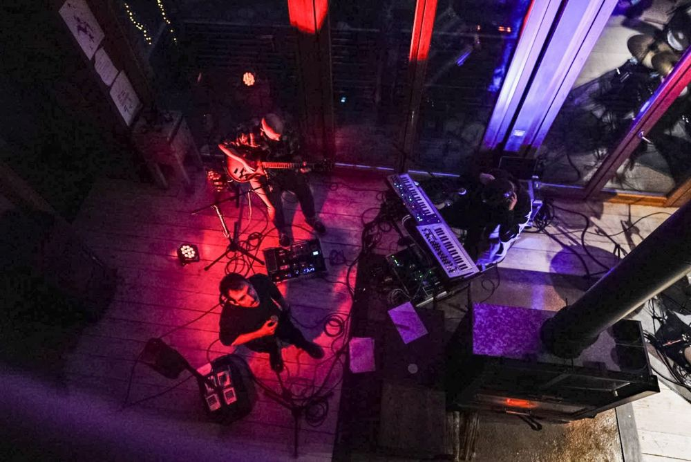

MATERIALI / TRACCE / RELAZIONIRicercatore, musicologo & altre cose. Studio come e se le logiche delle piattaforme digitali trasformano la vita musicale quotidiana.
Profilo e CV ⟶
NUOVO →
PLATFORMED! — proposta inviata a Fondazione Cariplo, per il Bando Giovani Ricercatori 2026.
Pubblicazioni recenti
peer reviewed
capitolo · open access
Progetti attivi
Mapping Printed Sources of Entertainment Music in Twentieth-Century Italy · data visualization
Workshop di scrittura collettiva · LCdC
Altro
Musica & produzione
Scene indipendente. Progetti, release, live ed eventi.
Dialoghi sul processo creativo delle pratiche musicali viventi: una serie a mia cura, nata dalla riflessione del gruppo DALM sugli approcci dialogici.
Tuttimieistupidintenti. Aggiornamenti su ricerca e progetti. Non esattamente sempre aggiornata :).
Conferenze & presentazioni. Dove sono andato a parlare delle mie ricerche
La cartografia non si è caricata. Puoi consultare l’elenco delle conferenze.